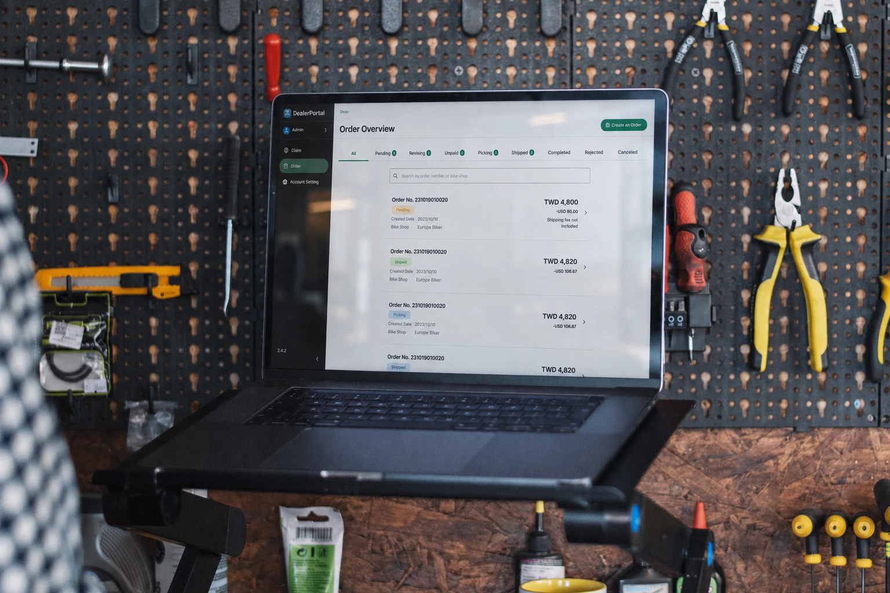
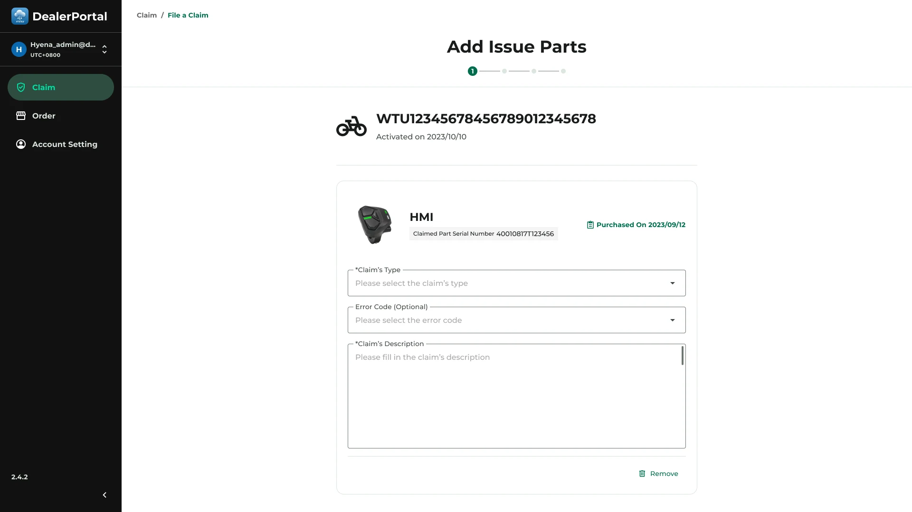
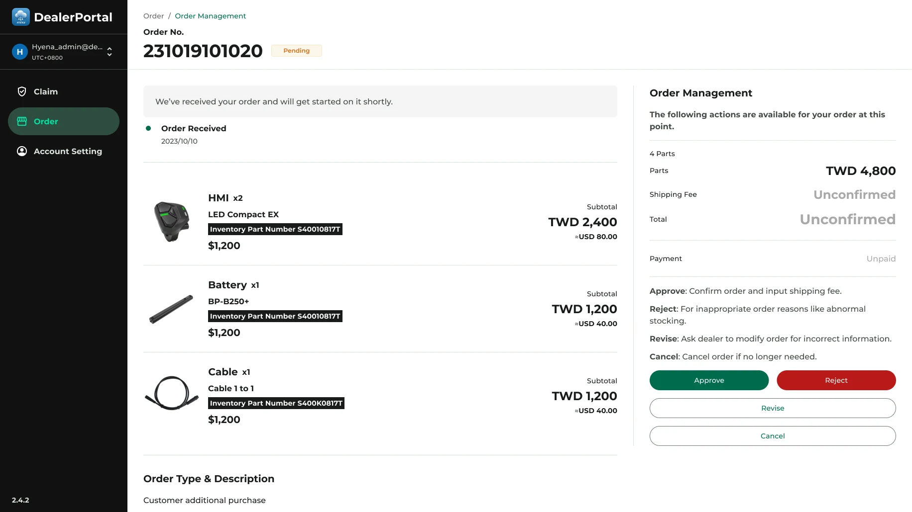
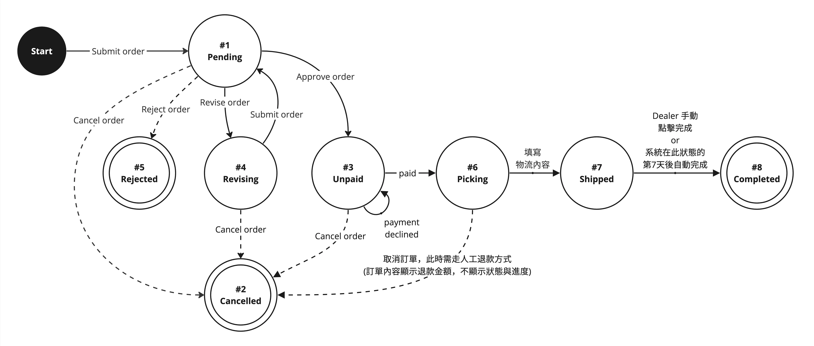
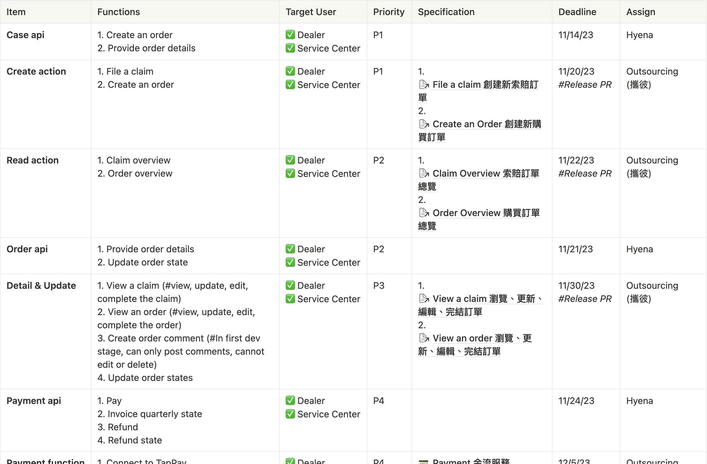
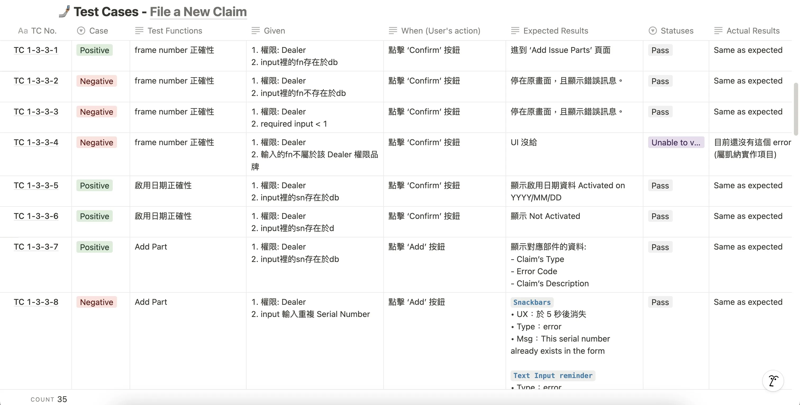

Identified by frame number
The bike and its available activation information provide context.
CLAIM SYSTEM · PRODUCT MANAGEMENT
I defined the claim journey and coordinated development, after-sales, and an external front-end team to deliver a clearer process for submitting, reviewing, and tracking claims.

Claim System lets e-bike dealers file warranty claims and order replacement parts, and gives the after-sales team one place to review, manage, and ship every case.
I joined when the project had only initial requirements. As Product Manager, I developed the flows and specifications, aligned the internal teams and external vendor, and supported testing through launch.
In the previous process, dealers did not always provide the information needed to assess a claim. Missing part details and unclear fault descriptions required additional clarification before the after-sales team could proceed.
The team also needed to verify the claimed part against the bike configuration, review the available warranty information, and keep a record of replacement parts. I brought these needs together in the product requirements.
Establish which bike and part the request concerns.
Collect a clear description and photos of the issue.
Check the configuration and available warranty information.
Communicate the decision and record the replacement shipment.
Review needs summarized from the project requirements.
I organized the experience around the information dealers needed to provide and the decisions the after-sales team needed to make. The specifications connected submission fields, review rules, and case progress.
I defined how the frame number identifies the bike and how a part serial number or part number brings in the relevant component information. Available purchase and activation dates give the service team context for its warranty review.

The bike and its available activation information provide context.
The part serial number and purchase date support review.
Claim type, optional error code, and a required description.
I included required part photos, a claim type, and a description in the submission requirements. These give reviewers more useful information at the start and help reduce requests for missing details.
For claims rejected because the warranty has expired, the notification specification includes a link to purchase parts through Order. When information needs correcting, the revision flow lets the dealer update the existing claim and resubmit it.
I defined the claim states, the actions available to each role, and the information shown at each step. The service team can review and update a case while dealers follow its progress.
The service team reviews the request and can ask for revisions.
Approved replacement parts are prepared for shipment.
Shipment details and outgoing part serial numbers are recorded.
The case is closed with its history available for reference.
Main claim path. Requests needing changes return to review after the dealer revises the original claim.
Order supports replacement-parts purchases, including cases outside warranty coverage. I specified the purchase flow, payment states, and review actions so dealers and the service team could follow each order through payment and shipment.
With the reworked purchase process, payment success rose from 63% to 92%.

Current status and progress sit with the order.
Parts and costs stay visible during review.
Approve, return for revision, reject, or cancel.

I worked with after-sales, software, and the external front-end team to clarify the required behavior and maintain a shared reference as development progressed.
I wrote the PRD with user stories, flows, state rules, and permissions, and split the delivery plan into dated milestones between our software team and the vendor. I followed up on implementation questions and progress throughout delivery.
The delivery plan assigned API work to Hyena and front-end work to the vendor, with separate target dates for each part of the workflow.
Create an order and provide its details.
Build the claim and purchase submission interfaces.
Build the claim and order overview interfaces.

With limited QA capacity, I tested each release during development and logged issues in Notion so the team could address them earlier. During QA, I ran and recorded additional test cases in Testmo alongside the team to support release verification.
I recorded the starting conditions, user actions, expected behavior, and observed results. These examples show how the claim requirements became concrete checks during development.
01 / VALID FRAME NUMBER · TC 1-3-3-1
Recorded result: Pass · Same as expected.
02 / UNKNOWN FRAME NUMBER · TC 1-3-3-2
Recorded result: Pass · Same as expected.
03 / DUPLICATE PART · TC 1-3-3-8
Recorded result: Pass · Same as expected.

My contribution covered the full path from initial requirements to launch: defining the experience, documenting system behavior, coordinating delivery, and testing the product with the team.
A clear submission helps the dealer explain the issue and gives the service team a better starting point for review. Progress and revision instructions help both sides understand what happens next.
Reviewing the implementation against the agreed flows helped surface gaps and gave the internal team and vendor a concrete basis for resolving them.